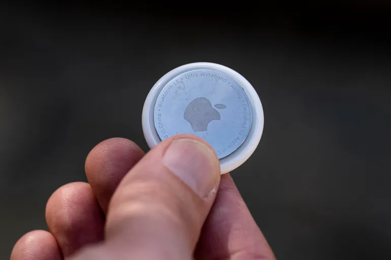

علوم

أشجار عتيقة تكشف السر الذي جعل العام الماضي هو الأشد حرارة منذ 2000 عام
وتأكد العلماء بالفعل أن العام الماضي كان أشد الأعوام حرارة على الإطلاق في العالم بفارق كبير، على الأقل منذ عام 1850، بسبب تغير المناخ.
|

شركة "بلو أوريغن" تطلق أولى رحلاتها الفضائية المأهولة منذ 2022
ضرب عنيف شامل غزة وتحليق مستمر مما ائدئ الئ استشهاد عدد لايحصئ
|
اكتشاف جديد عن الثقوب السوداء يثبت صحة تنبؤات أينشتاين
|

شاشات لمس إلكترونية مضادة للميكروبات.. حلول واعدة
في السنوات الأخيرة زاد الاهتمام بقابلية أسطح شاشات اللمس الشخصية أو متعددة المستخدمين مثل الأجهزة المحمولة والأجهزة اللوحية؛
|
الرياضة

آخر مباراة لأمبابي في دوري الأبطال بقميص باريس سان جيرمان
وسيلعب كيليان مبابي، أفضل هداف في تاريخ باريس سان جيرمان، آخر مباراة له على أرضه في دوري أبطال أوروبا في العاصمة الفرنسية بقميص باريس سان جيرمان.
|
صحيفة "لوباريسيان": كواليس شجار "هز الجدران" بين كيليان مبابي وناصر الخليفي
تحدثت صحيفة "لو باريزيان" الفرنسية أمس الإثنين عن "شجار قبيح اهتزت له الجدران"، بين رئيس نادي باريس سان جيرمان، ناصر الخليفي ونجم الفريق كيليان مبابي
|

اعتذار وإقالة.. قناة إسبانية تقيل معلقًا أطلق نكتة "عنصرية" على الهواء
اعتذرت قناة موفيستار التلفزيونية الإسبانية في بيان صحفي بعد مباراة برشلونة وباريس سان جيرمان عن "نكتة عنصرية" أدلى بها معلقها الرياضي خلال المباراة
|

بعد هدف يامين جمال الملغى في مرمى الريال.. برشلونة يلجأ إلى القضاء
قرر نادي برشلونة اللجوء إلى القضاء المدني بعد رفض الاتحاد الإسباني لكرة القدم طلبه بالحصول على الصور والتسجيلات الصوتية بين حكم المباراة والمساعدين في غرفة (الفار)،
|
الدولية

هل يغير الفيديو التوليدي باستخدام الذكاء الاصطناعي صناعة الأفلام؟
بدأ إدخال تقنيات المعالجة الرقمية ضمن الأفلام الروائية الطويلة، عام 1973 مع فيلم وست وورلد (Westworld)،
|

آبل وغوغل تمنعان إساءة استعمال أجهزة التتبع الصغيرة
أعلنت شركة آبل عن تطوير معيار مشترك بالتعاون مع شركة غوغل لمنع إساءة استعمال أجهزة التتبع الصغيرة،
|
اربعة تطبيقات مجانية لإنشاء المحتوى بالذكاء الاصطناعي على الآيفون
تشعر الآن كما لو أن كل مجال التقنية يدور حول الذكاء الاصطناعي، حيث يمكنك بسهولة إنشاء مختلف أنواع المحتوى،
|
كيف يمكن أن تخسر أموالك بمجرد مسح رمز استجابة سريع؟
أكواد الاستجابة السريعة والمعروفة باسم "كيو آر" (QR) قطعت شوطا طويلا منذ اختراعها في عام 1994 بواسطة إحدى الشركات التابعة لشركة تويوتا.
|
عنوان
الأستوديو (دبي)
تليفون : 776682282
Ba 777112977@gmail.com
ساعات العمل
نحن دوماً معكم نواكب الأحداث عن قرب وننقلها لكم
تابعنا